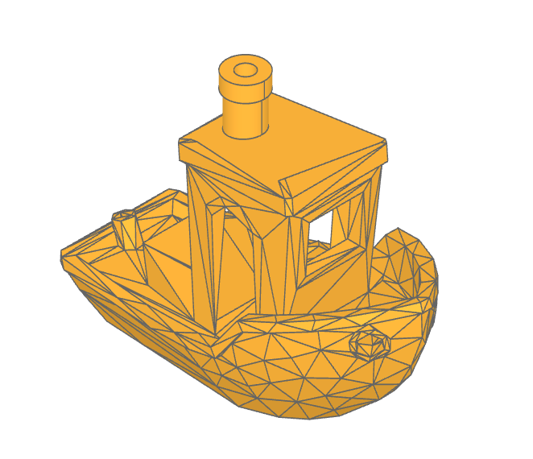
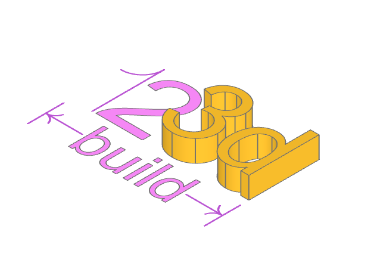
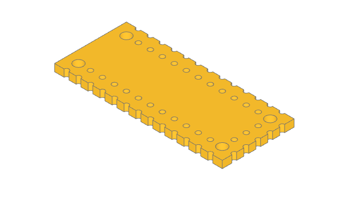

The build123d Examples
Overview
In the GitHub repository you will find an examples folder.
Most of the examples show the builder and algebra modes.
Benchy
The Benchy examples shows how to import a STL model as a Solid object with the class Mesher and modify it by replacing chimney with a BREP version.
Gallery
🔨 Reference Implementation (Builder Mode)
# Import the benchy as a Solid model
importer = Mesher()
benchy_stl = importer.read("low_poly_benchy.stl")[0]
with BuildPart() as benchy:
add(benchy_stl)
# Determine the plane that defines the top of the roof
vertices = benchy.vertices()
roof_vertices = vertices.filter_by_position(Axis.Z, 38, 42)
roof_plane_vertices = [
roof_vertices.group_by(Axis.Y, tol_digits=2)[-1].sort_by(Axis.X)[0],
roof_vertices.sort_by(Axis.Z)[0],
roof_vertices.group_by(Axis.Y, tol_digits=2)[0].sort_by(Axis.X)[0],
]
roof_plane = Plane(
Face(Wire.make_polygon([v.to_tuple() for v in roof_plane_vertices]))
)
# Remove the faceted smoke stack
split(bisect_by=roof_plane, keep=Keep.BOTTOM)
# Determine the position and size of the smoke stack
smoke_stack_vertices = vertices.group_by(Axis.Z, tol_digits=0)[-1]
smoke_stack_center = sum(
[Vector(v.X, v.Y, v.Z) for v in smoke_stack_vertices], Vector()
) * (1 / len(smoke_stack_vertices))
smoke_stack_radius = max(
[
(Vector(*v.to_tuple()) - smoke_stack_center).length
for v in smoke_stack_vertices
]
)
# Create the new smoke stack
with BuildSketch(Plane(smoke_stack_center)):
Circle(smoke_stack_radius)
Circle(smoke_stack_radius - 2 * MM, mode=Mode.SUBTRACT)
extrude(amount=-3 * MM)
with BuildSketch(Plane(smoke_stack_center)):
Circle(smoke_stack_radius - 0.5 * MM)
Circle(smoke_stack_radius - 2 * MM, mode=Mode.SUBTRACT)
extrude(amount=roof_plane_vertices[1].Z - smoke_stack_center.Z)
show(benchy)
Former build123d Logo
This example creates the former build123d logo (new logo was created in the end of 2023).
Using text and lines to create the first build123d logo. The builder mode example also generates the SVG file logo.svg.
🔨 Reference Implementation (Builder Mode)
with BuildSketch() as logo_text:
Text("123d", font_size=10, align=(Align.MIN, Align.MIN))
font_height = logo_text.vertices().sort_by(Axis.Y)[-1].Y
with BuildSketch() as build_text:
Text("build", font_size=5, align=(Align.CENTER, Align.CENTER))
build_bb = bounding_box(build_text.sketch, mode=Mode.PRIVATE)
build_vertices = build_bb.vertices().sort_by(Axis.X)
build_width = build_vertices[-1].X - build_vertices[0].X
with BuildLine() as one:
l1 = Line((font_height * 0.3, 0), (font_height * 0.3, font_height))
TangentArc(l1 @ 1, (0, font_height * 0.7), tangent=(l1 % 1) * -1)
with BuildSketch() as two:
with Locations((font_height * 0.35, 0)):
Text("2", font_size=10, align=(Align.MIN, Align.MIN))
with BuildPart() as three_d:
with BuildSketch(Plane((font_height * 1.1, 0))):
Text("3d", font_size=10, align=(Align.MIN, Align.MIN))
extrude(amount=font_height * 0.3)
logo_width = three_d.vertices().sort_by(Axis.X)[-1].X
with BuildLine() as arrow_left:
t1 = TangentArc((0, 0), (1, 0.75), tangent=(1, 0))
mirror(t1, Plane.XZ)
ext_line_length = font_height * 0.5
dim_line_length = (logo_width - build_width - 2 * font_height * 0.05) / 2
with BuildLine() as extension_lines:
l1 = Line((0, -font_height * 0.1), (0, -ext_line_length - font_height * 0.1))
l2 = Line(
(logo_width, -font_height * 0.1),
(logo_width, -ext_line_length - font_height * 0.1),
)
with Locations(l1 @ 0.5):
add(arrow_left.line)
with Locations(l2 @ 0.5):
add(arrow_left.line, rotation=180.0)
Line(l1 @ 0.5, l1 @ 0.5 + Vector(dim_line_length, 0))
Line(l2 @ 0.5, l2 @ 0.5 - Vector(dim_line_length, 0))
# Precisely center the build Faces
with BuildSketch() as build:
with Locations(
(l1 @ 0.5 + l2 @ 0.5) / 2
- Vector((build_vertices[-1].X + build_vertices[0].X) / 2, 0)
):
add(build_text.sketch)
if True:
logo = Compound(
children=[
one.line,
two.sketch,
three_d.part,
extension_lines.line,
build.sketch,
]
)
# logo.export_step("logo.step")
def add_svg_shape(svg: ExportSVG, shape: Shape, color: tuple[float, float, float]):
global counter
try:
counter += 1
except:
counter = 1
visible, _hidden = shape.project_to_viewport(
(-5, 1, 10), viewport_up=(0, 1, 0), look_at=(0, 0, 0)
)
if color is not None:
svg.add_layer(str(counter), fill_color=color, line_weight=1)
else:
svg.add_layer(str(counter), line_weight=1)
svg.add_shape(visible, layer=str(counter))
svg = ExportSVG(scale=20)
add_svg_shape(svg, logo, None)
# add_svg_shape(svg, Compound(children=[one.line, extension_lines.line]), None)
# add_svg_shape(svg, Compound(children=[two.sketch, build.sketch]), (170, 204, 255))
# add_svg_shape(svg, three_d.part, (85, 153, 255))
svg.write("logo.svg")
show_object(one, name="one")
show_object(two, name="two")
show_object(three_d, name="three_d")
show_object(extension_lines, name="extension_lines")
show_object(build, name="build")
✏️ Reference Implementation (Algebra Mode)
logo_text = Text("123d", font_size=10, align=Align.MIN)
font_height = logo_text.vertices().sort_by(Axis.Y).last.Y
build_text = Text("build", font_size=5, align=Align.CENTER)
build_bb = build_text.bounding_box()
build_width = build_bb.max.X - build_bb.min.X
l1 = Line((font_height * 0.3, 0), (font_height * 0.3, font_height))
one = l1 + TangentArc(l1 @ 1, (0, font_height * 0.7), tangent=(l1 % 1) * -1)
two = Pos(font_height * 0.35, 0) * Text("2", font_size=10, align=Align.MIN)
three_d = Text("3d", font_size=10, align=Align.MIN)
three_d = Pos(font_height * 1.1, 0) * extrude(three_d, amount=font_height * 0.3)
logo_width = three_d.vertices().sort_by(Axis.X).last.X
t1 = TangentArc((0, 0), (1, 0.75), tangent=(1, 0))
arrow_left = t1 + mirror(t1, Plane.XZ)
ext_line_length = font_height * 0.5
dim_line_length = (logo_width - build_width - 2 * font_height * 0.05) / 2
l1 = Line((0, -font_height * 0.1), (0, -ext_line_length - font_height * 0.1))
l2 = Line(
(logo_width, -font_height * 0.1),
(logo_width, -ext_line_length - font_height * 0.1),
)
extension_lines = Curve() + (l1 + l2)
extension_lines += Pos(*(l1 @ 0.5)) * arrow_left
extension_lines += (Pos(*(l2 @ 0.5)) * Rot(Z=180)) * arrow_left
extension_lines += Line(l1 @ 0.5, l1 @ 0.5 + Vector(dim_line_length, 0))
extension_lines += Line(l2 @ 0.5, l2 @ 0.5 - Vector(dim_line_length, 0))
# Precisely center the build Faces
p1 = Pos((l1 @ 0.5 + l2 @ 0.5) / 2 - Vector((build_bb.max.X + build_bb.min.X) / 2, 0))
build = p1 * build_text
cmpd = Compound([three_d, two, one, build, extension_lines])
show_object(cmpd, name="compound")
Canadian Flag Blowing in The Wind
A Canadian Flag blowing in the wind created by projecting planar faces onto a non-planar face (the_wind).
This example also demonstrates building complex lines that snap to existing features.
More Images
🔨 Reference Implementation (Builder Mode)
def surface(amplitude, u, v):
"""Calculate the surface displacement of the flag at a given position"""
return v * amplitude / 20 * cos(3.5 * pi * u) + amplitude / 10 * v * sin(
1.1 * pi * v
)
# Note that the surface to project on must be a little larger than the faces
# being projected onto it to create valid projected faces
the_wind = Face.make_surface_from_array_of_points(
[
[
Vector(
width * (v * 1.1 / 40 - 0.05),
height * (u * 1.2 / 40 - 0.1),
height * surface(wave_amplitude, u / 40, v / 40) / 2,
)
for u in range(41)
]
for v in range(41)
]
)
with BuildSketch(Plane.XY.offset(10)) as west_field_builder:
Rectangle(width / 4, height, align=(Align.MIN, Align.MIN))
west_field_planar = west_field_builder.sketch.faces()[0]
east_field_planar = west_field_planar.mirror(Plane.YZ.offset(width / 2))
with BuildSketch(Plane((width / 2, 0, 10))) as center_field_builder:
Rectangle(width / 2, height, align=(Align.CENTER, Align.MIN))
with BuildSketch(
Plane((width / 2, 0, 10)), mode=Mode.SUBTRACT
) as maple_leaf_builder:
with BuildLine() as outline:
l1 = Polyline((0.0000, 0.0771), (0.0187, 0.0771), (0.0094, 0.2569))
l2 = Polyline((0.0325, 0.2773), (0.2115, 0.2458), (0.1873, 0.3125))
RadiusArc(l1 @ 1, l2 @ 0, 0.0271)
l3 = Polyline((0.1915, 0.3277), (0.3875, 0.4865), (0.3433, 0.5071))
TangentArc(l2 @ 1, l3 @ 0, tangent=l2 % 1)
l4 = Polyline((0.3362, 0.5235), (0.375, 0.6427), (0.2621, 0.6188))
SagittaArc(l3 @ 1, l4 @ 0, 0.003)
l5 = Polyline((0.2469, 0.6267), (0.225, 0.6781), (0.1369, 0.5835))
ThreePointArc(
l4 @ 1, (l4 @ 1 + l5 @ 0) * 0.5 + Vector(-0.002, -0.002), l5 @ 0
)
l6 = Polyline((0.1138, 0.5954), (0.1562, 0.8146), (0.0881, 0.7752))
Spline(
l5 @ 1,
l6 @ 0,
tangents=(l5 % 1, l6 % 0),
tangent_scalars=(2, 2),
)
l7 = Line((0.0692, 0.7808), (0.0000, 0.9167))
TangentArc(l6 @ 1, l7 @ 0, tangent=l6 % 1)
mirror(outline.edges(), Plane.YZ)
make_face()
scale(by=height)
maple_leaf_planar = maple_leaf_builder.sketch.faces()[0]
center_field_planar = center_field_builder.sketch.faces()[0]
west_field = west_field_planar.project_to_shape(the_wind, (0, 0, -1))[0]
west_field.color = Color("red")
east_field = east_field_planar.project_to_shape(the_wind, (0, 0, -1))[0]
east_field.color = Color("red")
center_field = center_field_planar.project_to_shape(the_wind, (0, 0, -1))[0]
center_field.color = Color("white")
maple_leaf = maple_leaf_planar.project_to_shape(the_wind, (0, 0, -1))[0]
maple_leaf.color = Color("red")
canadian_flag = Compound(children=[west_field, east_field, center_field, maple_leaf])
show(Rot(90, 0, 0) * canadian_flag)
✏️ Reference Implementation (Algebra Mode)
def surface(amplitude, u, v):
"""Calculate the surface displacement of the flag at a given position"""
return v * amplitude / 20 * cos(3.5 * pi * u) + amplitude / 10 * v * sin(
1.1 * pi * v
)
# Note that the surface to project on must be a little larger than the faces
# being projected onto it to create valid projected faces
the_wind = Face.make_surface_from_array_of_points(
[
[
Vector(
width * (v * 1.1 / 40 - 0.05),
height * (u * 1.2 / 40 - 0.1),
height * surface(wave_amplitude, u / 40, v / 40) / 2,
)
for u in range(41)
]
for v in range(41)
]
)
field_planar = Plane.XY.offset(10) * Rectangle(width / 4, height, align=Align.MIN)
west_field_planar = field_planar.faces()[0]
east_field_planar = mirror(west_field_planar, Plane.YZ.offset(width / 2))
l1 = Polyline((0.0000, 0.0771), (0.0187, 0.0771), (0.0094, 0.2569))
l2 = Polyline((0.0325, 0.2773), (0.2115, 0.2458), (0.1873, 0.3125))
r1 = RadiusArc(l1 @ 1, l2 @ 0, 0.0271)
l3 = Polyline((0.1915, 0.3277), (0.3875, 0.4865), (0.3433, 0.5071))
r2 = TangentArc(l2 @ 1, l3 @ 0, tangent=l2 % 1)
l4 = Polyline((0.3362, 0.5235), (0.375, 0.6427), (0.2621, 0.6188))
r3 = SagittaArc(l3 @ 1, l4 @ 0, 0.003)
l5 = Polyline((0.2469, 0.6267), (0.225, 0.6781), (0.1369, 0.5835))
r4 = ThreePointArc(l4 @ 1, (l4 @ 1 + l5 @ 0) * 0.5 + Vector(-0.002, -0.002), l5 @ 0)
l6 = Polyline((0.1138, 0.5954), (0.1562, 0.8146), (0.0881, 0.7752))
s = Spline(
l5 @ 1,
l6 @ 0,
tangents=(l5 % 1, l6 % 0),
tangent_scalars=(2, 2),
)
l7 = Line((0.0692, 0.7808), (0.0000, 0.9167))
r5 = TangentArc(l6 @ 1, l7 @ 0, tangent=l6 % 1)
outline = l1 + [l2, r1, l3, r2, l4, r3, l5, r4, l6, s, l7, r5]
outline += mirror(outline, Plane.YZ)
maple_leaf_planar = make_face(outline)
center_field_planar = (
Rectangle(1, 1, align=(Align.CENTER, Align.MIN)) - maple_leaf_planar
)
def scale_move(obj):
return Plane((width / 2, 0, 10)) * scale(obj, height)
def project(obj):
return obj.faces()[0].project_to_shape(the_wind, (0, 0, -1))[0]
maple_leaf_planar = scale_move(maple_leaf_planar)
center_field_planar = scale_move(center_field_planar)
west_field = project(west_field_planar)
west_field.color = Color("red")
east_field = project(east_field_planar)
east_field.color = Color("red")
center_field = project(center_field_planar)
center_field.color = Color("white")
maple_leaf = project(maple_leaf_planar)
maple_leaf.color = Color("red")
canadian_flag = Compound(children=[west_field, east_field, center_field, maple_leaf])
show(Rot(90, 0, 0) * canadian_flag)
Circuit Board With Holes
This example demonstrates placing holes around a part.
Builder mode uses Locations context to place the positions.
Algebra mode uses product and range to calculate the positions.
More Images
🔨 Reference Implementation (Builder Mode)
with BuildPart() as pcb:
with BuildSketch():
Rectangle(pcb_length, pcb_width)
for i in range(65 // 5):
x = i * 5 - 30
with Locations((x, -15), (x, -10), (x, 10), (x, 15)):
Circle(1, mode=Mode.SUBTRACT)
for i in range(30 // 5 - 1):
y = i * 5 - 10
with Locations((30, y), (35, y)):
Circle(1, mode=Mode.SUBTRACT)
with GridLocations(60, 20, 2, 2):
Circle(2, mode=Mode.SUBTRACT)
extrude(amount=pcb_height)
show_object(pcb.part.wrapped)
✏️ Reference Implementation (Algebra Mode)
x_coords = product(range(65 // 5), (-15, -10, 10, 15))
y_coords = product((30, 35), range(30 // 5 - 1))
pcb = Rectangle(pcb_length, pcb_width)
pcb -= [Pos(i * 5 - 30, y) * Circle(1) for i, y in x_coords]
pcb -= [Pos(x, i * 5 - 10) * Circle(1) for x, i in y_coords]
pcb -= [loc * Circle(2) for loc in GridLocations(60, 20, 2, 2)]
pcb = extrude(pcb, pcb_height)
show(pcb)
Clock Face
🔨 Reference Implementation (Builder Mode)
from build123d import *
from ocp_vscode import show
clock_radius = 10
with BuildSketch() as minute_indicator:
with BuildLine() as outline:
l1 = CenterArc((0, 0), clock_radius * 0.975, 0.75, 4.5)
l2 = CenterArc((0, 0), clock_radius * 0.925, 0.75, 4.5)
Line(l1 @ 0, l2 @ 0)
Line(l1 @ 1, l2 @ 1)
make_face()
fillet(minute_indicator.vertices(), radius=clock_radius * 0.01)
with BuildSketch() as clock_face:
Circle(clock_radius)
with PolarLocations(0, 60):
add(minute_indicator.sketch, mode=Mode.SUBTRACT)
with PolarLocations(clock_radius * 0.875, 12):
SlotOverall(clock_radius * 0.05, clock_radius * 0.025, mode=Mode.SUBTRACT)
for hour in range(1, 13):
with PolarLocations(clock_radius * 0.75, 1, -hour * 30 + 90, 360, rotate=False):
Text(
str(hour),
font_size=clock_radius * 0.175,
font_style=FontStyle.BOLD,
mode=Mode.SUBTRACT,
)
show(clock_face)
✏️ Reference Implementation (Algebra Mode)
from build123d import *
from ocp_vscode import show
clock_radius = 10
l1 = CenterArc((0, 0), clock_radius * 0.975, 0.75, 4.5)
l2 = CenterArc((0, 0), clock_radius * 0.925, 0.75, 4.5)
l3 = Line(l1 @ 0, l2 @ 0)
l4 = Line(l1 @ 1, l2 @ 1)
minute_indicator = make_face([l1, l3, l2, l4])
minute_indicator = fillet(minute_indicator.vertices(), radius=clock_radius * 0.01)
clock_face = Circle(clock_radius)
clock_face -= PolarLocations(0, 60) * minute_indicator
clock_face -= PolarLocations(clock_radius * 0.875, 12) * SlotOverall(
clock_radius * 0.05, clock_radius * 0.025
)
clock_face -= [
loc
* Text(
str(hour + 1),
font_size=clock_radius * 0.175,
font_style=FontStyle.BOLD,
align=Align.CENTER,
)
for hour, loc in enumerate(
PolarLocations(clock_radius * 0.75, 12, 60, -360, rotate=False)
)
]
show(clock_face)
The Python code utilizes the build123d library to create a 3D model of a clock face. It defines a minute indicator with arcs and lines, applying fillets, and then integrates it into the clock face sketch. The clock face includes a circular outline, hour labels, and slots at specified positions. The resulting 3D model represents a detailed and visually appealing clock design.
PolarLocations are used to position features on the clock face.
Handle
🔨 Reference Implementation (Builder Mode)
from build123d import *
from ocp_vscode import show_object
segment_count = 6
with BuildPart() as handle:
# Create a path for the sweep along the handle - added to pending_edges
with BuildLine() as handle_center_line:
Spline(
(-10, 0, 0),
(0, 0, 5),
(10, 0, 0),
tangents=((0, 0, 1), (0, 0, -1)),
tangent_scalars=(1.5, 1.5),
)
# Create the cross sections - added to pending_faces
for i in range(segment_count + 1):
with BuildSketch(handle_center_line.line ^ (i / segment_count)) as section:
if i % segment_count == 0:
Circle(1)
else:
Rectangle(1.25, 3)
fillet(section.vertices(), radius=0.2)
# Record the sections for display
sections = handle.pending_faces
# Create the handle by sweeping along the path
sweep(multisection=True)
assert abs(handle.part.volume - 94.77361455046953) < 1e-3
show_object(handle_center_line.line, name="handle_center_line")
for i, section in enumerate(sections):
show_object(section, name="section" + str(i))
show_object(handle.part, name="handle", options=dict(alpha=0.6))
✏️ Reference Implementation (Algebra Mode)
from build123d import *
from ocp_vscode import show_object
segment_count = 6
# Create a path for the sweep along the handle - added to pending_edges
handle_center_line = Spline(
(-10, 0, 0),
(0, 0, 5),
(10, 0, 0),
tangents=((0, 0, 1), (0, 0, -1)),
tangent_scalars=(1.5, 1.5),
)
# Create the cross sections - added to pending_faces
sections = Sketch()
for i in range(segment_count + 1):
location = handle_center_line ^ (i / segment_count)
if i % segment_count == 0:
circle = location * Circle(1)
else:
circle = location * Rectangle(1.25, 3)
circle = fillet(circle.vertices(), radius=0.2)
sections += circle
# Create the handle by sweeping along the path
handle = sweep(sections, path=handle_center_line, multisection=True)
show_object(handle_center_line, name="handle_path")
for i, circle in enumerate(sections):
show_object(circle, name="section" + str(i))
show_object(handle, name="handle", options=dict(alpha=0.6))
This example demonstrates multisection sweep creating a drawer handle.
Heat Exchanger
🔨 Reference Implementation (Builder Mode)
from build123d import *
from ocp_vscode import show
exchanger_diameter = 10 * CM
exchanger_length = 30 * CM
plate_thickness = 5 * MM
# 149 tubes
tube_diameter = 5 * MM
tube_spacing = 2 * MM
tube_wall_thickness = 0.5 * MM
tube_extension = 3 * MM
bundle_diameter = exchanger_diameter - 2 * tube_diameter
fillet_radius = tube_spacing / 3
assert tube_extension > fillet_radius
# Build the heat exchanger
with BuildPart() as heat_exchanger:
# Generate list of tube locations
tube_locations = [
l
for l in HexLocations(
radius=(tube_diameter + tube_spacing) / 2,
x_count=exchanger_diameter // tube_diameter,
y_count=exchanger_diameter // tube_diameter,
)
if l.position.length < bundle_diameter / 2
]
tube_count = len(tube_locations)
with BuildSketch() as tube_plan:
with Locations(*tube_locations):
Circle(radius=tube_diameter / 2)
Circle(radius=tube_diameter / 2 - tube_wall_thickness, mode=Mode.SUBTRACT)
extrude(amount=exchanger_length / 2)
with BuildSketch(
Plane(
origin=(0, 0, exchanger_length / 2 - tube_extension - plate_thickness),
z_dir=(0, 0, 1),
)
) as plate_plan:
Circle(radius=exchanger_diameter / 2)
with Locations(*tube_locations):
Circle(radius=tube_diameter / 2 - tube_wall_thickness, mode=Mode.SUBTRACT)
extrude(amount=plate_thickness)
half_volume_before_fillet = heat_exchanger.part.volume
# Simulate welded tubes by adding a fillet to the outside radius of the tubes
fillet(
heat_exchanger.edges()
.filter_by(GeomType.CIRCLE)
.sort_by(SortBy.RADIUS)
.sort_by(Axis.Z, reverse=True)[2 * tube_count : 3 * tube_count],
radius=fillet_radius,
)
half_volume_after_fillet = heat_exchanger.part.volume
mirror(about=Plane.XY)
fillet_volume = 2 * (half_volume_after_fillet - half_volume_before_fillet)
assert abs(fillet_volume - 469.88331045553787) < 1e-3
show(heat_exchanger)
✏️ Reference Implementation (Algebra Mode)
from build123d import *
from ocp_vscode import show
exchanger_diameter = 10 * CM
exchanger_length = 30 * CM
plate_thickness = 5 * MM
# 149 tubes
tube_diameter = 5 * MM
tube_spacing = 2 * MM
tube_wall_thickness = 0.5 * MM
tube_extension = 3 * MM
bundle_diameter = exchanger_diameter - 2 * tube_diameter
fillet_radius = tube_spacing / 3
assert tube_extension > fillet_radius
# Build the heat exchanger
tube_locations = [
l
for l in HexLocations(
radius=(tube_diameter + tube_spacing) / 2,
x_count=exchanger_diameter // tube_diameter,
y_count=exchanger_diameter // tube_diameter,
)
if l.position.length < bundle_diameter / 2
]
ring = Circle(tube_diameter / 2) - Circle(tube_diameter / 2 - tube_wall_thickness)
tube_plan = Sketch() + tube_locations * ring
heat_exchanger = extrude(tube_plan, exchanger_length / 2)
plate_plane = Plane(
origin=(0, 0, exchanger_length / 2 - tube_extension - plate_thickness),
z_dir=(0, 0, 1),
)
plate = Circle(radius=exchanger_diameter / 2) - tube_locations * Circle(
radius=tube_diameter / 2 - tube_wall_thickness
)
heat_exchanger += extrude(plate_plane * plate, plate_thickness)
edges = (
heat_exchanger.edges()
.filter_by(GeomType.CIRCLE)
.group_by(SortBy.RADIUS)[1]
.group_by()[2]
)
half_volume_before_fillet = heat_exchanger.volume
heat_exchanger = fillet(edges, radius=fillet_radius)
half_volume_after_fillet = heat_exchanger.volume
heat_exchanger += mirror(heat_exchanger, Plane.XY)
fillet_volume = 2 * (half_volume_after_fillet - half_volume_before_fillet)
assert abs(fillet_volume - 469.88331045553787) < 1e-3
show(heat_exchanger)
This example creates a model of a parametric heat exchanger core. The positions
of the tubes are defined with HexLocations and further
limited to fit within the circular end caps. The ends of the tubes are filleted
to the end plates to simulate welding.
Key Cap
🔨 Reference Implementation (Builder Mode)
from build123d import *
from ocp_vscode import *
with BuildPart() as key_cap:
# Start with the plan of the key cap and extrude it
with BuildSketch() as plan:
Rectangle(18 * MM, 18 * MM)
extrude(amount=10 * MM, taper=15)
# Create a dished top
with Locations((0, -3 * MM, 47 * MM)):
Sphere(40 * MM, mode=Mode.SUBTRACT, rotation=(90, 0, 0))
# Fillet all the edges except the bottom
fillet(
key_cap.edges().filter_by_position(Axis.Z, 0, 30 * MM, inclusive=(False, True)),
radius=1 * MM,
)
# Hollow out the key by subtracting a scaled version
scale(by=(0.925, 0.925, 0.85), mode=Mode.SUBTRACT)
# Add supporting ribs while leaving room for switch activation
with BuildSketch(Plane(origin=(0, 0, 4 * MM))):
Rectangle(15 * MM, 0.5 * MM)
Rectangle(0.5 * MM, 15 * MM)
Circle(radius=5.5 * MM / 2)
# Extrude the mount and ribs to the key cap underside
extrude(until=Until.NEXT)
# Find the face on the bottom of the ribs to build onto
rib_bottom = key_cap.faces().filter_by_position(Axis.Z, 4 * MM, 4 * MM)[0]
# Add the switch socket
with BuildSketch(rib_bottom) as cruciform:
Circle(radius=5.5 * MM / 2)
Rectangle(4.1 * MM, 1.17 * MM, mode=Mode.SUBTRACT)
Rectangle(1.17 * MM, 4.1 * MM, mode=Mode.SUBTRACT)
extrude(amount=3.5 * MM, mode=Mode.ADD)
assert abs(key_cap.part.volume - 644.8900473617498) < 1e-3
show(key_cap, alphas=[0.3])
✏️ Reference Implementation (Algebra Mode)
from build123d import *
from ocp_vscode import *
# Taper Extrude and Extrude to "next" while creating a Cherry MX key cap
# See: https://www.cherrymx.de/en/dev.html
plan = Rectangle(18 * MM, 18 * MM)
key_cap = extrude(plan, amount=10 * MM, taper=15)
# Create a dished top
key_cap -= Location((0, -3 * MM, 47 * MM), (90, 0, 0)) * Sphere(40 * MM)
# Fillet all the edges except the bottom
key_cap = fillet(
key_cap.edges().filter_by_position(Axis.Z, 0, 30 * MM, inclusive=(False, True)),
radius=1 * MM,
)
# Hollow out the key by subtracting a scaled version
key_cap -= scale(key_cap, (0.925, 0.925, 0.85))
# Add supporting ribs while leaving room for switch activation
ribs = Rectangle(17.5 * MM, 0.5 * MM)
ribs += Rectangle(0.5 * MM, 17.5 * MM)
ribs += Circle(radius=5.51 * MM / 2)
# Extrude the mount and ribs to the key cap underside
key_cap += extrude(Pos(0, 0, 4 * MM) * ribs, until=Until.NEXT, target=key_cap)
# Find the face on the bottom of the ribs to build onto
rib_bottom = key_cap.faces().filter_by_position(Axis.Z, 4 * MM, 4 * MM)[0]
# Add the switch socket
socket = Circle(radius=5.5 * MM / 2)
socket -= Rectangle(4.1 * MM, 1.17 * MM)
socket -= Rectangle(1.17 * MM, 4.1 * MM)
key_cap += extrude(Plane(rib_bottom) * socket, amount=3.5 * MM)
show(key_cap, alphas=[0.3])
This example demonstrates the design of a Cherry MX key cap by using extrude with a taper and extrude until next.
Maker Coin
This example creates the maker coin as defined by Angus on the Maker’s Muse YouTube channel. There are two key features:
the use of
DoubleTangentArcto create a smooth transition from the central dish to the outside arc, andembossing the text into the top of the coin not just as a simple extrude but from a projection which results in text with even depth.
🔨 Reference Implementation (Builder Mode)
# Coin Parameters
diameter, thickness = 50 * MM, 10 * MM
with BuildPart() as maker_coin:
# On XZ plane draw the profile of half the coin
with BuildSketch(Plane.XZ) as profile:
with BuildLine() as outline:
l1 = Polyline((0, thickness * 0.6), (0, 0), ((diameter - thickness) / 2, 0))
l2 = JernArc(
start=l1 @ 1, tangent=l1 % 1, radius=thickness / 2, arc_size=300
) # extend the arc beyond the intersection but not closed
l3 = DoubleTangentArc(l1 @ 0, tangent=(1, 0), other=l2)
make_face() # make it a 2D shape
revolve() # revolve 360°
# Pattern the detents around the coin
with BuildSketch() as detents:
with PolarLocations(radius=(diameter + 5) / 2, count=8):
Circle(thickness * 1.4 / 2)
extrude(amount=thickness, mode=Mode.SUBTRACT) # cut away the detents
fillet(maker_coin.edges(Select.NEW), 2) # fillet the cut edges
# Add an embossed label
with BuildSketch(Plane.XY.offset(thickness)) as label: # above coin
Text("OS", font_size=15)
project() # label on top of coin
extrude(amount=-thickness / 5, mode=Mode.SUBTRACT) # emboss label
show(maker_coin)
Multi-Sketch Loft
This example demonstrates lofting a set of sketches, selecting the top and bottom by type, and shelling.
🔨 Reference Implementation (Builder Mode)
from math import pi, sin
from build123d import *
from ocp_vscode import show
with BuildPart() as art:
slice_count = 10
for i in range(slice_count + 1):
with BuildSketch(Plane(origin=(0, 0, i * 3), z_dir=(0, 0, 1))) as slice:
Circle(10 * sin(i * pi / slice_count) + 5)
loft()
top_bottom = art.faces().filter_by(GeomType.PLANE)
offset(openings=top_bottom, amount=0.5)
want = 1306.3405290344635
got = art.part.volume
delta = abs(got - want)
tolerance = want * 1e-5
assert delta < tolerance, f"{delta=} is greater than {tolerance=}; {got=}, {want=}"
show(art, names=["art"])
✏️ Reference Implementation (Algebra Mode)
from math import pi, sin
from build123d import *
from ocp_vscode import show
slice_count = 10
art = Sketch()
for i in range(slice_count + 1):
plane = Plane(origin=(0, 0, i * 3), z_dir=(0, 0, 1))
art += plane * Circle(10 * sin(i * pi / slice_count) + 5)
art = loft(art)
top_bottom = art.faces().filter_by(GeomType.PLANE)
art = offset(art, openings=top_bottom, amount=0.5)
show(art, names=["art"])
Peg Board Hook
This script creates a a J-shaped pegboard hook. These hooks are commonly used for organizing tools in garages, workshops, or other spaces where tools and equipment need to be stored neatly and accessibly. The hook is created by defining a complex path and then sweeping it to define the hook. The sides of the hook are flattened to aid 3D printing.
🔨 Reference Implementation (Builder Mode)
from build123d import *
from ocp_vscode import show
pegd = 6.35 + 0.1 # mm ~0.25inch
c2c = 25.4 # mm 1.0inch
arcd = 7.2
both = 10
topx = 6
midx = 8
maind = 0.82 * pegd
midd = 1.0 * pegd
hookd = 23
hookx = 10
splitz = maind / 2 - 0.1
topangs = 70
with BuildPart() as mainp:
with BuildLine(mode=Mode.PRIVATE) as sprof:
l1 = Line((-both, 0), (c2c - arcd / 2 - 0.5, 0))
l2 = JernArc(start=l1 @ 1, tangent=l1 % 1, radius=arcd / 2, arc_size=topangs)
l3 = PolarLine(
start=l2 @ 1,
length=topx,
direction=l2 % 1,
)
l4 = JernArc(start=l3 @ 1, tangent=l3 % 1, radius=arcd / 2, arc_size=-topangs)
l5 = PolarLine(
start=l4 @ 1,
length=topx,
direction=l4 % 1,
)
l6 = JernArc(
start=l1 @ 0, tangent=(l1 % 0).reverse(), radius=hookd / 2, arc_size=170
)
l7 = PolarLine(
start=l6 @ 1,
length=hookx,
direction=l6 % 1,
)
with BuildSketch(Plane.YZ):
Circle(radius=maind / 2)
sweep(path=sprof.wires()[0])
with BuildLine(mode=Mode.PRIVATE) as stub:
l7 = Line((0, 0), (0, midx + maind / 2))
with BuildSketch(Plane.XZ):
Circle(radius=midd / 2)
sweep(path=stub.wires()[0])
# splits help keep the object 3d printable by reducing overhang
split(bisect_by=Plane(origin=(0, 0, -splitz)))
split(bisect_by=Plane(origin=(0, 0, splitz)), keep=Keep.BOTTOM)
show(mainp)
✏️ Reference Implementation (Algebra Mode)
from build123d import *
from ocp_vscode import show
pegd = 6.35 + 0.1 # mm ~0.25inch
c2c = 25.4 # mm 1.0inch
arcd = 7.2
both = 10
topx = 6
midx = 8
maind = 0.82 * pegd
midd = 1.0 * pegd
hookd = 23
hookx = 10
splitz = maind / 2 - 0.1
topangs = 70
l1 = Line((-both, 0), (c2c - arcd / 2 - 0.5, 0))
l2 = JernArc(start=l1 @ 1, tangent=l1 % 1, radius=arcd / 2, arc_size=topangs)
l3 = PolarLine(
start=l2 @ 1,
length=topx,
direction=l2 % 1,
)
l4 = JernArc(start=l3 @ 1, tangent=l3 % 1, radius=arcd / 2, arc_size=-topangs)
l5 = PolarLine(
start=l4 @ 1,
length=topx,
direction=l4 % 1,
)
l6 = JernArc(start=l1 @ 0, tangent=(l1 % 0).reverse(), radius=hookd / 2, arc_size=170)
l7 = PolarLine(
start=l6 @ 1,
length=hookx,
direction=l6 % 1,
)
sprof = Curve() + (l1, l2, l3, l4, l5, l6, l7)
wire = Wire(sprof.edges()) # TODO sprof.wires() fails
mainp = sweep(Plane.YZ * Circle(radius=maind / 2), path=wire)
stub = Line((0, 0), (0, midx + maind / 2))
mainp += sweep(Plane.XZ * Circle(radius=midd / 2), path=stub)
# splits help keep the object 3d printable by reducing overhang
mainp = split(mainp, Plane(origin=(0, 0, -splitz)))
mainp = split(mainp, Plane(origin=(0, 0, splitz)), keep=Keep.BOTTOM)
show(mainp)
Platonic Solids
This example creates a custom Part object PlatonicSolid.
Platonic solids are five three-dimensional shapes that are highly symmetrical, known since antiquity and named after the ancient Greek philosopher Plato. These solids are unique because their faces are congruent regular polygons, with the same number of faces meeting at each vertex. The five Platonic solids are the tetrahedron (4 triangular faces), cube (6 square faces), octahedron (8 triangular faces), dodecahedron (12 pentagonal faces), and icosahedron (20 triangular faces). Each solid represents a unique way in which identical polygons can be arranged in three dimensions to form a convex polyhedron, embodying ideals of symmetry and balance.
✏️ Reference Implementation (Algebra Mode)
from build123d import *
from math import sqrt
from typing import Union, Literal
from scipy.spatial import ConvexHull
from ocp_vscode import show
PHI = (1 + sqrt(5)) / 2 # The Golden Ratio
class PlatonicSolid(BasePartObject):
"""Part Object: Platonic Solid
Create one of the five convex Platonic solids.
Args:
face_count (Literal[4,6,8,12,20]): number of faces
diameter (float): double distance to vertices, i.e. maximum size
rotation (RotationLike, optional): angles to rotate about axes. Defaults to (0, 0, 0).
align (Union[None, Align, tuple[Align, Align, Align]], optional): align min, center,
or max of object. Defaults to None.
mode (Mode, optional): combine mode. Defaults to Mode.ADD.
"""
tetrahedron_vertices = [(1, 1, 1), (1, -1, -1), (-1, 1, -1), (-1, -1, 1)]
cube_vertices = [(i, j, k) for i in [-1, 1] for j in [-1, 1] for k in [-1, 1]]
octahedron_vertices = (
[(i, 0, 0) for i in [-1, 1]]
+ [(0, i, 0) for i in [-1, 1]]
+ [(0, 0, i) for i in [-1, 1]]
)
dodecahedron_vertices = (
[(i, j, k) for i in [-1, 1] for j in [-1, 1] for k in [-1, 1]]
+ [(0, i / PHI, j * PHI) for i in [-1, 1] for j in [-1, 1]]
+ [(i / PHI, j * PHI, 0) for i in [-1, 1] for j in [-1, 1]]
+ [(i * PHI, 0, j / PHI) for i in [-1, 1] for j in [-1, 1]]
)
icosahedron_vertices = (
[(0, i, j * PHI) for i in [-1, 1] for j in [-1, 1]]
+ [(i, j * PHI, 0) for i in [-1, 1] for j in [-1, 1]]
+ [(i * PHI, 0, j) for i in [-1, 1] for j in [-1, 1]]
)
vertices_lookup = {
4: tetrahedron_vertices,
6: cube_vertices,
8: octahedron_vertices,
12: dodecahedron_vertices,
20: icosahedron_vertices,
}
_applies_to = [BuildPart._tag]
def __init__(
self,
face_count: Literal[4, 6, 8, 12, 20],
diameter: float = 1.0,
rotation: RotationLike = (0, 0, 0),
align: Union[None, Align, tuple[Align, Align, Align]] = None,
mode: Mode = Mode.ADD,
):
try:
platonic_vertices = PlatonicSolid.vertices_lookup[face_count]
except KeyError:
raise ValueError(
f"face_count must be one of 4, 6, 8, 12, or 20 not {face_count}"
)
# Create a convex hull from the vertices
hull = ConvexHull(platonic_vertices).simplices.tolist()
# Create faces from the vertex indices
platonic_faces = []
for face_vertex_indices in hull:
corner_vertices = [platonic_vertices[i] for i in face_vertex_indices]
platonic_faces.append(Face(Wire.make_polygon(corner_vertices)))
# Create the solid from the Faces
platonic_solid = Solid(Shell(platonic_faces)).clean()
# By definition, all vertices are the same distance from the origin so
# scale proportionally to this distance
platonic_solid = platonic_solid.scale(
(diameter / 2) / Vector(platonic_solid.vertices()[0]).length
)
super().__init__(part=platonic_solid, rotation=rotation, align=align, mode=mode)
solids = [
Rot(0, 0, 72 * i) * Pos(1, 0, 0) * PlatonicSolid(faces)
for i, faces in enumerate([4, 6, 8, 12, 20])
]
show(solids)
Playing Cards
This example creates a customs Sketch objects: Club, Spade, Heart, Diamond, and PlayingCard in addition to a two part playing card box which has suit cutouts in the lid. The four suits are created with Bézier curves that were imported as code from an SVG file and modified to the code found here.
🔨 Reference Implementation (Builder Mode)
from typing import Literal
from build123d import *
from ocp_vscode import show_object
# [Club]
class Club(BaseSketchObject):
def __init__(
self,
height: float,
rotation: float = 0,
align: tuple[Align, Align] = (Align.CENTER, Align.CENTER),
mode: Mode = Mode.ADD,
):
with BuildSketch() as club:
with BuildLine():
l0 = Line((0, -188), (76, -188))
b0 = Bezier(l0 @ 1, (61, -185), (33, -173), (17, -81))
b1 = Bezier(b0 @ 1, (49, -128), (146, -145), (167, -67))
b2 = Bezier(b1 @ 1, (187, 9), (94, 52), (32, 18))
b3 = Bezier(b2 @ 1, (92, 57), (113, 188), (0, 188))
mirror(about=Plane.YZ)
make_face()
scale(by=height / club.sketch.bounding_box().size.Y)
super().__init__(obj=club.sketch, rotation=rotation, align=align, mode=mode)
# [Club]
class Spade(BaseSketchObject):
def __init__(
self,
height: float,
rotation: float = 0,
align: tuple[Align, Align] = (Align.CENTER, Align.CENTER),
mode: Mode = Mode.ADD,
):
with BuildSketch() as spade:
with BuildLine():
b0 = Bezier((0, 198), (6, 190), (41, 127), (112, 61))
b1 = Bezier(b0 @ 1, (242, -72), (114, -168), (11, -105))
b2 = Bezier(b1 @ 1, (31, -174), (42, -179), (53, -198))
l0 = Line(b2 @ 1, (0, -198))
mirror(about=Plane.YZ)
make_face()
scale(by=height / spade.sketch.bounding_box().size.Y)
super().__init__(obj=spade.sketch, rotation=rotation, align=align, mode=mode)
class Heart(BaseSketchObject):
def __init__(
self,
height: float,
rotation: float = 0,
align: tuple[Align, Align] = (Align.CENTER, Align.CENTER),
mode: Mode = Mode.ADD,
):
with BuildSketch() as heart:
with BuildLine():
b1 = Bezier((0, 146), (20, 169), (67, 198), (97, 198))
b2 = Bezier(b1 @ 1, (125, 198), (151, 186), (168, 167))
b3 = Bezier(b2 @ 1, (197, 133), (194, 88), (158, 31))
b4 = Bezier(b3 @ 1, (126, -13), (94, -48), (62, -95))
b5 = Bezier(b4 @ 1, (40, -128), (0, -198))
mirror(about=Plane.YZ)
make_face()
scale(by=height / heart.sketch.bounding_box().size.Y)
super().__init__(obj=heart.sketch, rotation=rotation, align=align, mode=mode)
class Diamond(BaseSketchObject):
def __init__(
self,
height: float,
rotation: float = 0,
align: tuple[Align, Align] = (Align.CENTER, Align.CENTER),
mode: Mode = Mode.ADD,
):
with BuildSketch() as diamond:
with BuildLine():
Bezier((135, 0), (94, 69), (47, 134), (0, 198))
mirror(about=Plane.XZ)
mirror(about=Plane.YZ)
make_face()
scale(by=height / diamond.sketch.bounding_box().size.Y)
super().__init__(obj=diamond.sketch, rotation=rotation, align=align, mode=mode)
card_width = 2.5 * IN
card_length = 3.5 * IN
deck = 0.5 * IN
wall = 4 * MM
gap = 0.5 * MM
with BuildPart() as box_builder:
with BuildSketch() as plan:
Rectangle(card_width + 2 * wall, card_length + 2 * wall)
fillet(plan.vertices(), radius=card_width / 15)
extrude(amount=wall / 2)
with BuildSketch(box_builder.faces().sort_by(Axis.Z)[-1]) as walls:
add(plan.sketch)
offset(plan.sketch, amount=-wall, mode=Mode.SUBTRACT)
extrude(amount=deck / 2)
with BuildSketch(box_builder.faces().sort_by(Axis.Z)[-1]) as inset_walls:
offset(plan.sketch, amount=-(wall + gap) / 2, mode=Mode.ADD)
offset(plan.sketch, amount=-wall, mode=Mode.SUBTRACT)
extrude(amount=deck / 2)
with BuildPart() as lid_builder:
with BuildSketch() as outset_walls:
add(plan.sketch)
offset(plan.sketch, amount=-(wall - gap) / 2, mode=Mode.SUBTRACT)
extrude(amount=deck / 2)
with BuildSketch(lid_builder.faces().sort_by(Axis.Z)[-1]) as top:
add(plan.sketch)
extrude(amount=wall / 2)
with BuildSketch(lid_builder.faces().sort_by(Axis.Z)[-1]):
holes = GridLocations(
3 * card_width / 5, 3 * card_length / 5, 2, 2
).local_locations
for i, hole in enumerate(holes):
with Locations(hole) as hole_loc:
if i == 0:
Heart(card_length / 5)
elif i == 1:
Diamond(card_length / 5)
elif i == 2:
Spade(card_length / 5)
elif i == 3:
Club(card_length / 5)
extrude(amount=-wall, mode=Mode.SUBTRACT)
box = Compound(
[box_builder.part, lid_builder.part.moved(Location((0, 0, (wall + deck) / 2)))]
)
visible, hidden = box.project_to_viewport((70, -50, 120))
max_dimension = max(*Compound(children=visible + hidden).bounding_box().size)
exporter = ExportSVG(scale=100 / max_dimension)
exporter.add_layer("Visible")
exporter.add_layer("Hidden", line_color=(99, 99, 99), line_type=LineType.ISO_DOT)
exporter.add_shape(visible, layer="Visible")
exporter.add_shape(hidden, layer="Hidden")
# exporter.write(f"assets/card_box.svg")
class PlayingCard(BaseSketchObject):
"""PlayingCard
A standard playing card modelled as a Face.
Args:
rank (Literal['A', '2' .. '10', 'J', 'Q', 'K']): card rank
suit (Literal['Clubs', 'Spades', 'Hearts', 'Diamonds']): card suit
"""
width = 2.5 * IN
height = 3.5 * IN
suits = {"Clubs": Club, "Spades": Spade, "Hearts": Heart, "Diamonds": Diamond}
ranks = ["A", "2", "3", "4", "5", "6", "7", "8", "9", "10", "J", "Q", "K"]
def __init__(
self,
rank: Literal["A", "2", "3", "4", "5", "6", "7", "8", "9", "10", "J", "Q", "K"],
suit: Literal["Clubs", "Spades", "Hearts", "Diamonds"],
rotation: float = 0,
align: tuple[Align, Align] = (Align.CENTER, Align.CENTER),
mode: Mode = Mode.ADD,
):
with BuildSketch() as playing_card:
Rectangle(
PlayingCard.width, PlayingCard.height, align=(Align.MIN, Align.MIN)
)
fillet(playing_card.vertices(), radius=PlayingCard.width / 15)
with Locations(
(
PlayingCard.width / 7,
8 * PlayingCard.height / 9,
)
):
Text(
txt=rank,
font_size=PlayingCard.width / 7,
mode=Mode.SUBTRACT,
)
with Locations(
(
PlayingCard.width / 7,
7 * PlayingCard.height / 9,
)
):
PlayingCard.suits[suit](
height=PlayingCard.width / 12, mode=Mode.SUBTRACT
)
with Locations(
(
6 * PlayingCard.width / 7,
1 * PlayingCard.height / 9,
)
):
Text(
txt=rank,
font_size=PlayingCard.width / 7,
rotation=180,
mode=Mode.SUBTRACT,
)
with Locations(
(
6 * PlayingCard.width / 7,
2 * PlayingCard.height / 9,
)
):
PlayingCard.suits[suit](
height=PlayingCard.width / 12, rotation=180, mode=Mode.SUBTRACT
)
rank_int = PlayingCard.ranks.index(rank) + 1
rank_int = rank_int if rank_int < 10 else 1
with Locations((PlayingCard.width / 2, PlayingCard.height / 2)):
center_radius = 0 if rank_int == 1 else PlayingCard.width / 3.5
suit_rotation = 0 if rank_int == 1 else -90
suit_height = (
0.00159 * rank_int**2 - 0.0380 * rank_int + 0.37
) * PlayingCard.width
with PolarLocations(
radius=center_radius,
count=rank_int,
start_angle=90 if rank_int > 1 else 0,
):
PlayingCard.suits[suit](
height=suit_height,
rotation=suit_rotation,
mode=Mode.SUBTRACT,
)
super().__init__(
obj=playing_card.sketch, rotation=rotation, align=align, mode=mode
)
ace_spades = PlayingCard(rank="A", suit="Spades", align=Align.MIN)
ace_spades.color = Color("white")
king_hearts = PlayingCard(rank="K", suit="Hearts", align=Align.MIN)
king_hearts.color = Color("white")
queen_clubs = PlayingCard(rank="Q", suit="Clubs", align=Align.MIN)
queen_clubs.color = Color("white")
jack_diamonds = PlayingCard(rank="J", suit="Diamonds", align=Align.MIN)
jack_diamonds.color = Color("white")
ten_spades = PlayingCard(rank="10", suit="Spades", align=Align.MIN)
ten_spades.color = Color("white")
hand = Compound(
children=[
Rot(0, 0, -20) * Pos(0, 0, 0) * ace_spades,
Rot(0, 0, -10) * Pos(0, 0, -1) * king_hearts,
Rot(0, 0, 0) * Pos(0, 0, -2) * queen_clubs,
Rot(0, 0, 10) * Pos(0, 0, -3) * jack_diamonds,
Rot(0, 0, 20) * Pos(0, 0, -4) * ten_spades,
]
)
show_object(Pos(-20, 40) * hand)
show_object(box_builder.part, "box_builder")
show_object(
Pos(0, 0, (wall + deck) / 2) * lid_builder.part,
"lid_builder",
options={"alpha": 0.7},
)
Stud Wall
This example demonstrates creatings custom Part objects and putting them into assemblies. The custom object is a Stud used in the building industry while the assembly is a StudWall created from copies of Stud objects for efficiency. Both the Stud and StudWall objects use RigidJoints to define snap points which are used to position all of objects.
✏️ Reference Implementation (Algebra Mode)
class Stud(BasePartObject):
"""Part Object: Stud
Create a dimensional framing stud.
Args:
length (float): stud size
width (float): stud size
thickness (float): stud size
rotation (RotationLike, optional): angles to rotate about axes. Defaults to (0, 0, 0).
align (Union[Align, tuple[Align, Align, Align]], optional): align min, center,
or max of object. Defaults to (Align.CENTER, Align.CENTER, Align.MIN).
mode (Mode, optional): combine mode. Defaults to Mode.ADD.
"""
_applies_to = [BuildPart._tag]
def __init__(
self,
length: float = 8 * FT,
width: float = 3.5 * IN,
thickness: float = 1.5 * IN,
rotation: RotationLike = (0, 0, 0),
align: Union[None, Align, tuple[Align, Align, Align]] = (
Align.CENTER,
Align.CENTER,
Align.MIN,
),
mode: Mode = Mode.ADD,
):
self.length = length
self.width = width
self.thickness = thickness
# Create the basic shape
with BuildPart() as stud:
with BuildSketch():
RectangleRounded(thickness, width, 0.25 * IN)
extrude(amount=length)
# Create a Part object with appropriate alignment and rotation
super().__init__(part=stud.part, rotation=rotation, align=align, mode=mode)
# Add joints to the ends of the stud
RigidJoint("end0", self, Location())
RigidJoint("end1", self, Location((0, 0, length), (1, 0, 0), 180))
class StudWall(Compound):
"""StudWall
A simple stud wall assembly with top and sole plates.
Args:
length (float): wall length
depth (float, optional): stud width. Defaults to 3.5*IN.
height (float, optional): wall height. Defaults to 8*FT.
stud_spacing (float, optional): center-to-center. Defaults to 16*IN.
stud_thickness (float, optional): Defaults to 1.5*IN.
"""
def __init__(
self,
length: float,
depth: float = 3.5 * IN,
height: float = 8 * FT,
stud_spacing: float = 16 * IN,
stud_thickness: float = 1.5 * IN,
):
# Create the object that will be used for top and sole plates
plate = Stud(
length,
depth,
rotation=(0, -90, 0),
align=(Align.MIN, Align.CENTER, Align.MAX),
)
# Define where studs will go on the plates
stud_locations = Pos(stud_thickness / 2, 0, stud_thickness) * GridLocations(
stud_spacing, 0, int(length / stud_spacing) + 1, 1, align=Align.MIN
)
stud_locations.append(Pos(length - stud_thickness / 2, 0, stud_thickness))
# Create a single stud that will be copied for efficiency
stud = Stud(height - 2 * stud_thickness, depth, stud_thickness)
# For efficiency studs in the walls are copies with their own position
studs = []
for i, loc in enumerate(stud_locations):
stud_joint = RigidJoint(f"stud{i}", plate, loc)
stud_copy = copy.copy(stud)
stud_joint.connect_to(stud_copy.joints["end0"])
studs.append(stud_copy)
top_plate = copy.copy(plate)
sole_plate = copy.copy(plate)
# Position the top plate relative to the top of the first stud
studs[0].joints["end1"].connect_to(top_plate.joints["stud0"])
# Build the assembly of parts
super().__init__(children=[top_plate, sole_plate] + studs)
# Add joints to the wall
RigidJoint("inside0", self, Location((depth / 2, depth / 2, 0), (0, 0, 1), 90))
RigidJoint("end0", self, Location())
x_wall = StudWall(13 * FT)
y_wall = StudWall(9 * FT)
x_wall.joints["inside0"].connect_to(y_wall.joints["end0"])
show(x_wall, y_wall, render_joints=False)
Tea Cup
🔨 Reference Implementation (Builder Mode)
from build123d import *
from ocp_vscode import show
wall_thickness = 3 * MM
fillet_radius = wall_thickness * 0.49
with BuildPart() as tea_cup:
# Create the bowl of the cup as a revolved cross section
with BuildSketch(Plane.XZ) as bowl_section:
with BuildLine():
# Start & end points with control tangents
s = Spline(
(30 * MM, 10 * MM),
(69 * MM, 105 * MM),
tangents=((1, 0.5), (0.7, 1)),
tangent_scalars=(1.75, 1),
)
# Lines to finish creating ½ the bowl shape
Polyline(s @ 0, s @ 0 + (10 * MM, -10 * MM), (0, 0), (0, (s @ 1).Y), s @ 1)
make_face() # Create a filled 2D shape
revolve(axis=Axis.Z)
# Hollow out the bowl with openings on the top and bottom
offset(amount=-wall_thickness, openings=tea_cup.faces().filter_by(GeomType.PLANE))
# Add a bottom to the bowl
with Locations((0, 0, (s @ 0).Y)):
Cylinder(radius=(s @ 0).X, height=wall_thickness)
# Smooth out all the edges
fillet(tea_cup.edges(), radius=fillet_radius)
# Determine where the handle contacts the bowl
handle_intersections = [
tea_cup.part.find_intersection_points(
Axis(origin=(0, 0, vertical_offset), direction=(1, 0, 0))
)[-1][0]
for vertical_offset in [35 * MM, 80 * MM]
]
# Create a path for handle creation
with BuildLine(Plane.XZ) as handle_path:
Spline(
handle_intersections[0] - (wall_thickness / 2, 0),
handle_intersections[0] + (35 * MM, 30 * MM),
handle_intersections[0] + (40 * MM, 60 * MM),
handle_intersections[1] - (wall_thickness / 2, 0),
tangents=((1, 1.25), (-0.2, -1)),
)
# Align the cross section to the beginning of the path
with BuildSketch(handle_path.line ^ 0) as handle_cross_section:
RectangleRounded(wall_thickness, 8 * MM, fillet_radius)
sweep() # Sweep handle cross section along path
assert abs(tea_cup.part.volume - 130326) < 1
show(tea_cup, names=["tea cup"])
✏️ Reference Implementation (Algebra Mode)
from build123d import *
from ocp_vscode import show
wall_thickness = 3 * MM
fillet_radius = wall_thickness * 0.49
# Create the bowl of the cup as a revolved cross section
# Start & end points with control tangents
s = Spline(
(30 * MM, 10 * MM),
(69 * MM, 105 * MM),
tangents=((1, 0.5), (0.7, 1)),
tangent_scalars=(1.75, 1),
)
# Lines to finish creating ½ the bowl shape
s += Polyline(s @ 0, s @ 0 + (10 * MM, -10 * MM), (0, 0), (0, (s @ 1).Y), s @ 1)
bowl_section = Plane.XZ * make_face(s) # Create a filled 2D shape
tea_cup = revolve(bowl_section, axis=Axis.Z)
# Hollow out the bowl with openings on the top and bottom
tea_cup = offset(
tea_cup, -wall_thickness, openings=tea_cup.faces().filter_by(GeomType.PLANE)
)
# Add a bottom to the bowl
tea_cup += Pos(0, 0, (s @ 0).Y) * Cylinder(radius=(s @ 0).X, height=wall_thickness)
# Smooth out all the edges
tea_cup = fillet(tea_cup.edges(), radius=fillet_radius)
# Determine where the handle contacts the bowl
handle_intersections = [
tea_cup.find_intersection_points(
Axis(origin=(0, 0, vertical_offset), direction=(1, 0, 0))
)[-1][0]
for vertical_offset in [35 * MM, 80 * MM]
]
# Create a path for handle creation
path_spline = Spline(
handle_intersections[0] - (wall_thickness / 2, 0, 0),
handle_intersections[0] + (35 * MM, 0, 30 * MM),
handle_intersections[0] + (40 * MM, 0, 60 * MM),
handle_intersections[1] - (wall_thickness / 2, 0, 0),
tangents=((1, 0, 1.25), (-0.2, 0, -1)),
)
# Align the cross section to the beginning of the path
location = path_spline ^ 0
handle_cross_section = location * RectangleRounded(wall_thickness, 8 * MM, fillet_radius)
# Sweep handle cross section along path
tea_cup += sweep(handle_cross_section, path=path_spline)
# assert abs(tea_cup.part.volume - 130326.77052487945) < 1e-3
show(tea_cup, names=["tea cup"])
This example demonstrates the creation a tea cup, which serves as an example of constructing complex, non-flat geometrical shapes programmatically.
The tea cup model involves several CAD techniques, such as:
Revolve Operations: There is 1 occurrence of a revolve operation. This is used to create the main body of the tea cup by revolving a profile around an axis, a common technique for generating symmetrical objects like cups.
Sweep Operations: There are 2 occurrences of sweep operations. The handle are created by sweeping a profile along a path to generate non-planar surfaces.
Offset/Shell Operations: the bowl of the cup is hollowed out with the offset operation leaving the top open.
Fillet Operations: There is 1 occurrence of a fillet operation which is used to round the edges for aesthetic improvement and to mimic real-world objects more closely.
Vase
🔨 Reference Implementation (Builder Mode)
from build123d import *
from ocp_vscode import show_object
with BuildPart() as vase:
with BuildSketch() as profile:
with BuildLine() as outline:
l1 = Line((0, 0), (12, 0))
l2 = RadiusArc(l1 @ 1, (15, 20), 50)
l3 = Spline(l2 @ 1, (22, 40), (20, 50), tangents=(l2 % 1, (-0.75, 1)))
l4 = RadiusArc(l3 @ 1, l3 @ 1 + Vector(0, 5), 5)
l5 = Spline(
l4 @ 1,
l4 @ 1 + Vector(2.5, 2.5),
l4 @ 1 + Vector(0, 5),
tangents=(l4 % 1, (-1, 0)),
)
Polyline(
l5 @ 1,
l5 @ 1 + Vector(0, 1),
(0, (l5 @ 1).Y + 1),
l1 @ 0,
)
make_face()
revolve(axis=Axis.Y)
offset(openings=vase.faces().filter_by(Axis.Y)[-1], amount=-1)
top_edges = (
vase.edges().filter_by_position(Axis.Y, 60, 62).filter_by(GeomType.CIRCLE)
)
fillet(top_edges, radius=0.25)
fillet(vase.edges().sort_by(Axis.Y)[0], radius=0.5)
show_object(Rot(90, 0, 0) * vase.part, name="vase")
✏️ Reference Implementation (Algebra Mode)
from build123d import *
from ocp_vscode import show_object
l1 = Line((0, 0), (12, 0))
l2 = RadiusArc(l1 @ 1, (15, 20), 50)
l3 = Spline(l2 @ 1, (22, 40), (20, 50), tangents=(l2 % 1, (-0.75, 1)))
l4 = RadiusArc(l3 @ 1, l3 @ 1 + Vector(0, 5), 5)
l5 = Spline(
l4 @ 1,
l4 @ 1 + Vector(2.5, 2.5),
l4 @ 1 + Vector(0, 5),
tangents=(l4 % 1, (-1, 0)),
)
outline = l1 + l2 + l3 + l4 + l5
outline += Polyline(
l5 @ 1,
l5 @ 1 + Vector(0, 1),
(0, (l5 @ 1).Y + 1),
l1 @ 0,
)
profile = make_face(outline.edges())
vase = revolve(profile, Axis.Y)
vase = offset(vase, openings=vase.faces().sort_by(Axis.Y).last, amount=-1)
top_edges = vase.edges().filter_by(GeomType.CIRCLE).filter_by_position(Axis.Y, 60, 62)
vase = fillet(top_edges, radius=0.25)
vase = fillet(vase.edges().sort_by(Axis.Y).first, radius=0.5)
show_object(Rot(90, 0, 0) * vase, name="vase")
This example demonstrates the build123d techniques involving the creation of a vase. Specifically, it showcases the processes of revolving a sketch, shelling (creating a hollow object by removing material from its interior), and selecting edges by position range and type for the application of fillets (rounding off the edges).
Sketching: Drawing a 2D profile or outline that represents the side view of the vase.
Revolving: Rotating the sketch around an axis to create a 3D object. This step transforms the 2D profile into a 3D vase shape.
Offset/Shelling: Removing material from the interior of the solid vase to create a hollow space, making it resemble a real vase more closely.
Edge Filleting: Selecting specific edges of the vase for filleting, which involves rounding those edges. The edges are selected based on their position and type.